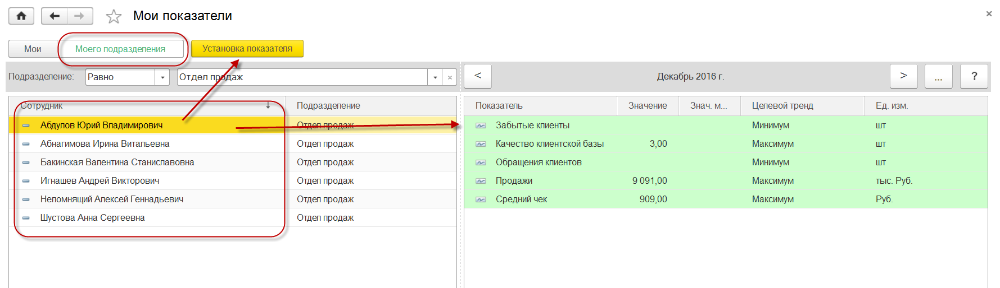
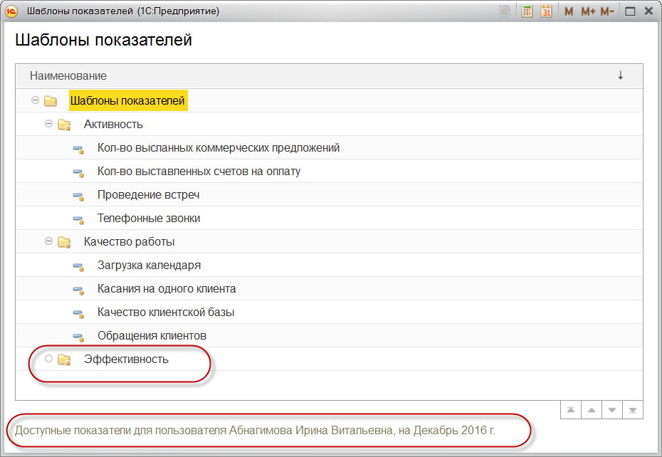
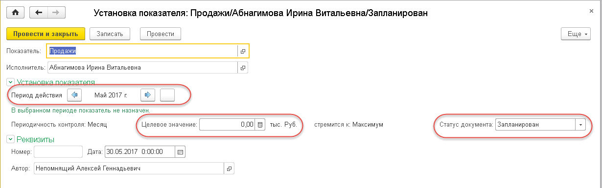

Руководитель подразделения может назначить своим сотрудникам показатели для оценки их работы. Руководитель заходит в раздел «Органайзер – Мои показатели». При этом по умолчанию отображаются все сотрудники выбранного подразделения. В открывшейся форме выбирает вариант «Моего подразделения». Для назначения показателя руководитель позиционируется на сотруднике, при этом у сотрудника отображаются уже назначенные показатели в выбранный период контроля. Для изменения уже назначенного показателя достаточно выбрать нужный показатель и ввести команду Enter.

Для ввода нового показателя необходимо спозиционироваться на нужном пользователе и выбрать команду «Установка показателя». В результате будет предложено выбрать "Шаблон показателей" для назначения по нему показателя для пользователя:

Важно! Для выбора доступны только шаблоны показателей, по которым еще не назначено показателя для выбранного пользователя в указанный период. Для изменения уже назначенного показателя необходимо войти в ранее назначенный показатель, как описано выше.
Важно! Решение поставляется с предопределенным списком шаблонов показателей и вариантов их анализа. При необходимости пользователь, имеющий права на изменение шаблонов показателей, может добавить новые, изменить существующие шаблоны показателей. Добавление новых шаблонов показателей доступно только в версии КОРП линейки решений 1С: CRM.

При назначении показателя следует указать обязательные данные:
Остальные реквизиты в документе являются дополнительными и предназначены только для информации (их просмотра).
Роль "Менеджер". Просмотр пользователем назначенных ему показателей